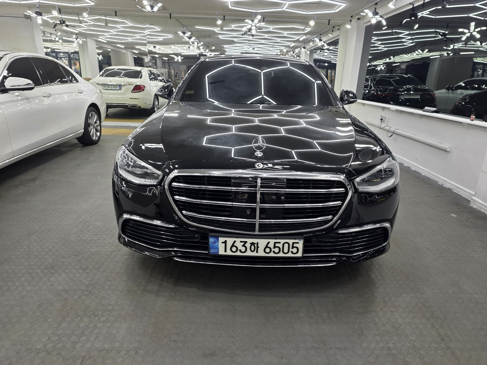
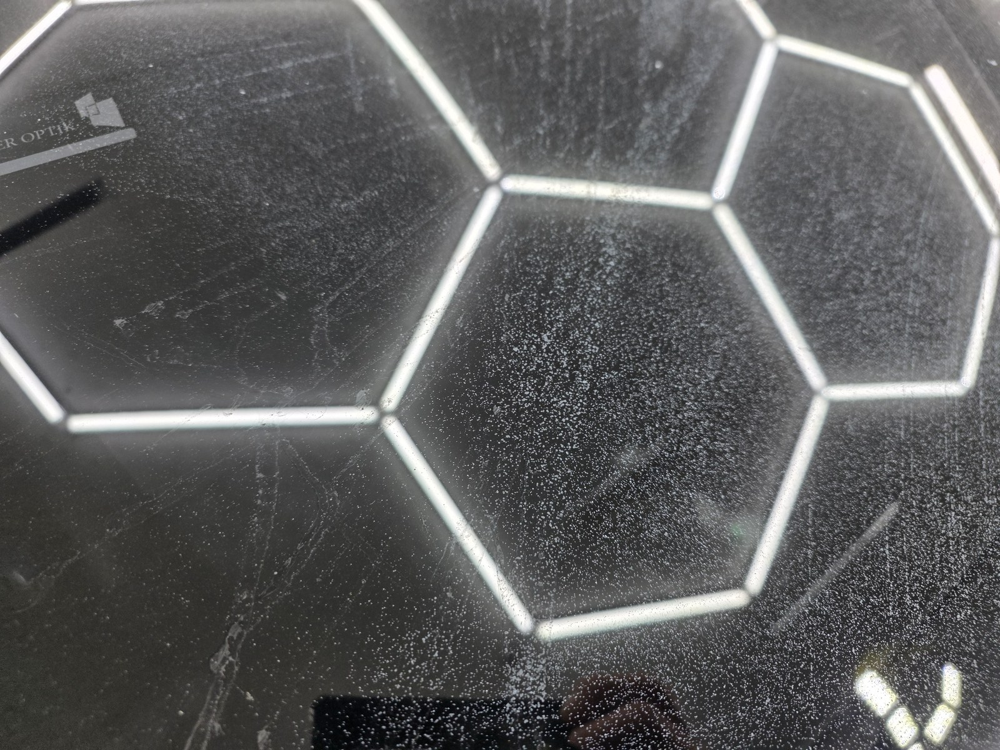
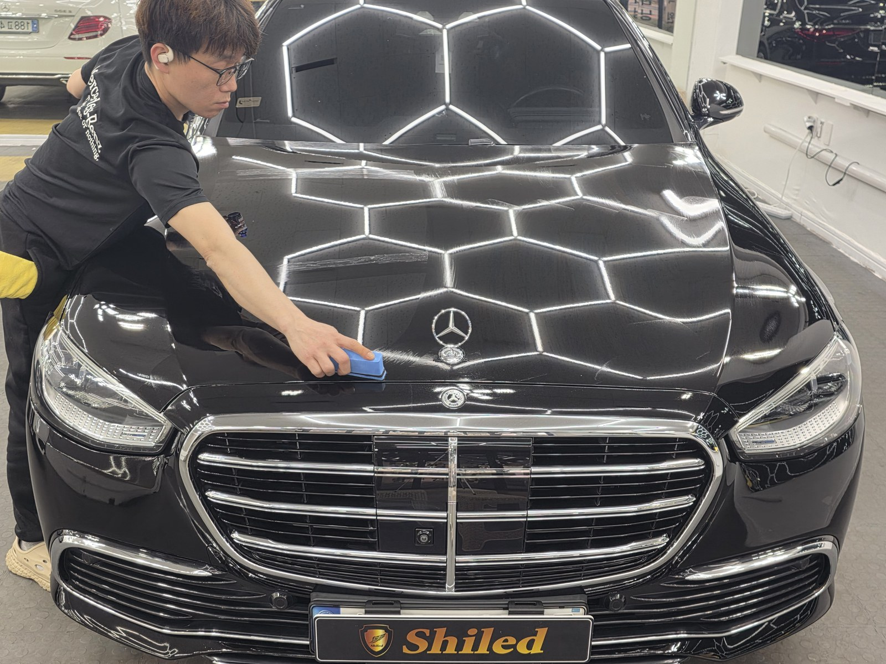
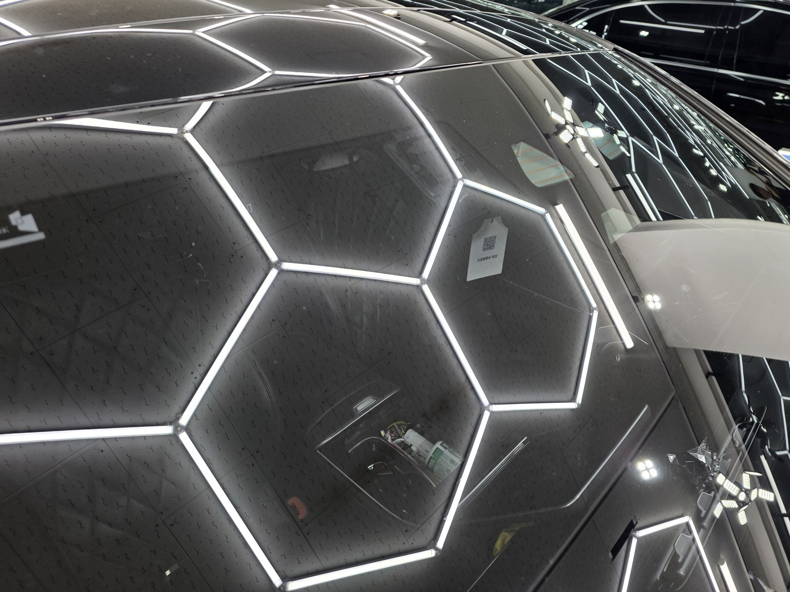
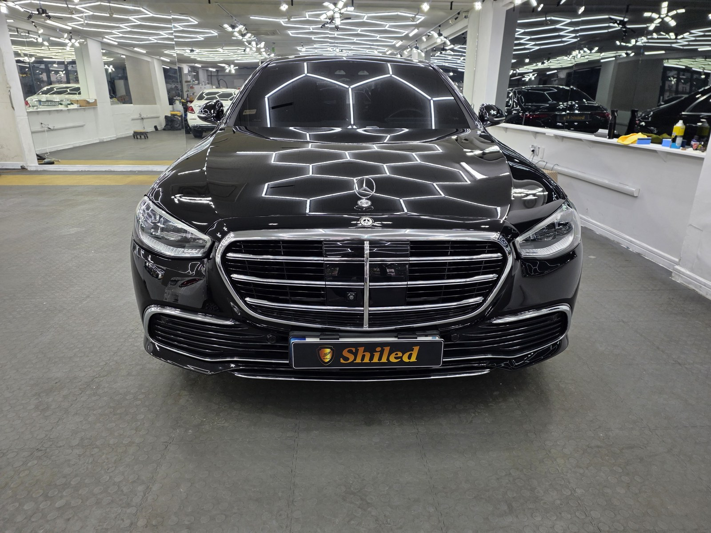
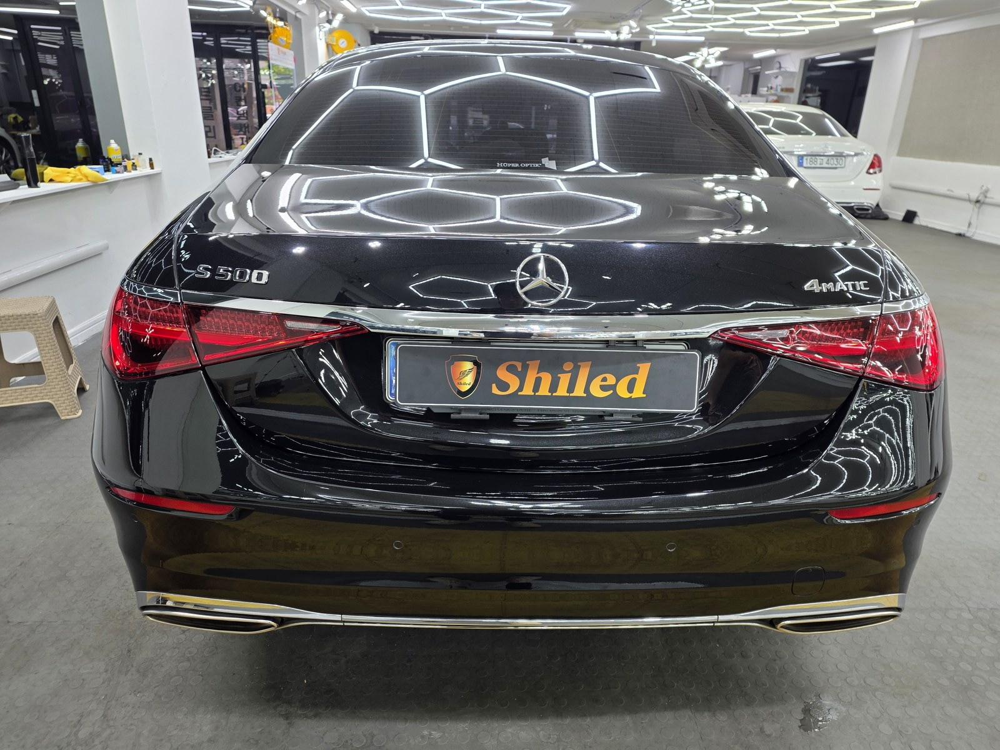
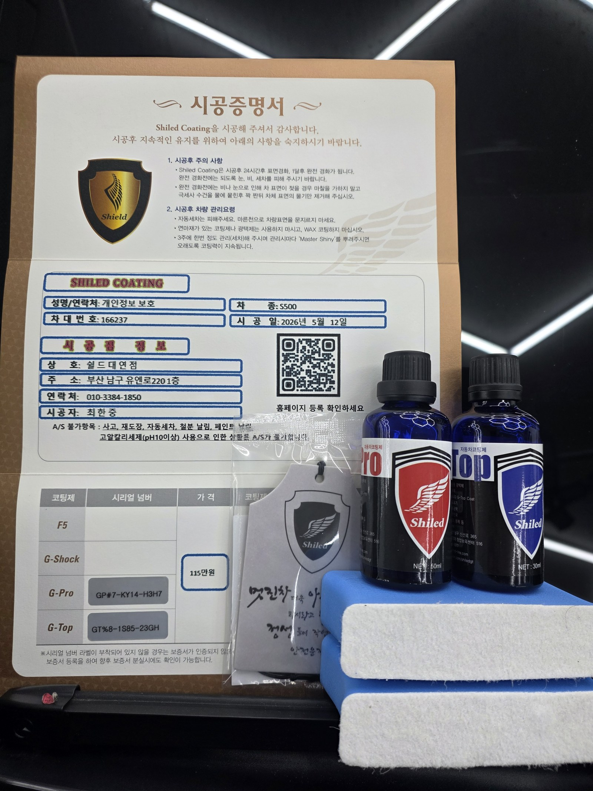

벤츠 S500입니다.
플래그십 세단인데, 도장면이 온통 까끌거린다며 들어오셨습니다.
손등으로 훑어보니 답이 바로 나왔습니다. 페인트 날림입니다.

페인트 날림, 세차로 안 지워지는 이유가 뭔가요
도료가 씻겨나가는 오염이 아니라 굳어버린 알갱이이기 때문입니다.
근처에서 도장 작업이나 공사가 있으면 공중에 흩어진 도료가 미세한 방울로 날아옵니다. 그게 본넷과 루프 위에 내려앉아 그대로 굳습니다. 물로 씻으면 표면 먼지만 빠지고, 굳은 입자는 그 자리에 그대로 박혀 있습니다.
검정 도장은 이게 특히 잔인합니다. 명암 대비가 커서 입자 하나하나가 다 드러납니다.

작업 전 본넷 클로즈업. 조명이 맑게 맺혀야 할 자리에 미세한 알갱이가 빼곡합니다
사진에서 보이는 미세한 입자가 전부 굳은 도료입니다.
차주분께서 세차를 여러 번 해도 안 지워진다며 답답해하셨는데, 육안으로는 잘 안 보여도 손끝에는 확실히 걸리는 상태였습니다. 플래그십 세단을 이렇게 관리하고 계신 만큼, 이 상태가 얼마나 신경 쓰이셨을지 충분히 느껴졌습니다.
부산 광택, 페인트 날림은 어떤 순서로 잡나
바로 갈아내면 안 됩니다. 그게 제일 중요합니다.
굳은 입자가 도장면 위에 얹혀 있는 상태에서 패드를 대면, 그 입자가 연마재처럼 도장을 긁고 지나갑니다. 없던 상처를 만드는 셈입니다.
그래서 순서를 지킵니다.
① 디테일링 세차로 표면 오염부터 걷어냅니다.
② 전용 약품으로 굳은 도료 입자를 하나씩 떼어냅니다.
③ 광택으로 그 과정에서 남은 미세 자국과 헤이즈를 정리합니다.
S500은 전장이 길고 패널 면적이 넓어서 ②·③ 단계에 시간이 가장 많이 들어갑니다. 넓다고 힘으로 미는 게 아니라 구역을 나눠서 같은 밀도로 훑어야 얼룩이 안 남습니다.
본넷과 그릴 라인을 구역별로 나눠서 작업합니다
기술자의 팁
페인트 날림을 확인하는 가장 쉬운 방법은 비닐봉지를 손에 씌우고 도장면을 쓸어보는 것입니다. 맨손으로는 못 느끼는 까끌거림이 비닐 너머로는 확실하게 잡힙니다. 눈으로 안 보여도 손에 걸리면 남아 있는 겁니다.
마감은 G-PRO + G-TOP 듀얼코팅으로
입자를 떼어낸 도장면은 그대로 두면 안 됩니다.
표면이 한 번 정리된 상태라 오염이 다시 앉기 쉽습니다. 그래서 G-PRO로 경도를 올리고 그 위에 G-TOP으로 발수·방오를 얹는 듀얼코팅으로 마감했습니다.
G-PRO는 스크래치 내성을 담당하고, G-TOP은 오염이 표면에 붙는 것 자체를 줄여줍니다. 같은 일을 또 겪지 않게 하려면 이 조합이 맞습니다. 코팅제는 제가 직접 개발·제조한 것으로 시공했습니다.

본넷에 G-PRO를 먼저 올리고, 그 위에 G-TOP을 도포합니다
마감 후, 무엇이 달라졌나
알갱이에 부딪혀 흩어지던 빛이 곧게 맺히기 시작했습니다.
페인트 날림이 있는 도장면은 조명 윤곽이 항상 번져 보입니다. 빛이 입자에 걸려 산란하기 때문입니다. 입자를 걷어내면 같은 조명이 육각 라인 그대로 딱 떨어집니다.

시공 완료 후 본넷 클로즈업. 육각 조명이 흐트러짐 없이 맺힙니다


플래그십 세단 특유의 깊은 검정이 그대로 살아났습니다

시공증명서와 관리용 마스터샤이니를 함께 드립니다
자주 묻는 질문
Q. 페인트 날림, 왜 세차로는 안 지워지나요?
A. 공중에 흩어진 도료가 미세한 방울 상태로 도장면에 내려앉아 그대로 굳기 때문입니다. 물과 세제로는 표면 위 먼지만 씻겨나가고, 굳어버린 도료 입자는 클리어코트 위에 사포처럼 그대로 박혀 있습니다.
Q. S500처럼 큰 세단은 작업 시간이 얼마나 걸리나요?
A. 패널 면적이 넓어서 입자를 떼어내는 단계에 시간이 가장 많이 들어갑니다. 구역을 나눠서 같은 밀도로 훑어야 얼룩 없이 마감되기 때문에, 준중형 세단보다 확실히 손이 더 갑니다.
Q. 페인트 날림 제거는 어떤 순서로 하나요?
A. 먼저 디테일링 세차로 표면 오염을 걷어내고, 그다음 전용 약품으로 굳은 도료 입자를 물리적으로 떼어냅니다. 마지막에 광택으로 그 과정에서 생긴 미세 자국까지 정리합니다. 순서를 건너뛰고 바로 갈아내면 입자가 도장면을 긁고 지나갑니다.
Q. G-PRO와 G-TOP, 왜 같이 쓰나요?
A. 역할이 다릅니다. G-PRO는 도장면 경도를 올려 스크래치 내성을 담당하고, G-TOP은 그 위에서 발수·방오 성능을 얹습니다. 입자를 떼어내 정리된 표면은 오염이 다시 앉기 쉬운 상태라, 두 제품을 함께 올리는 듀얼코팅으로 마감했습니다.
Q. 쉴드광택 위치와 예약은 어떻게 하나요?
A. 부산 남구 유엔로220 1F 쉴드광택입니다. 예약·상담은 010-3384-1850, 대표 최한중이 직접 상담하고 책임 시공합니다.
손으로 쓸었을 때 까끌거린다면 그건 먼지가 아닙니다.
제품을 직접 만드는 사람이 직접 작업합니다.
부산에서 페인트 날림 제거와 광택을 고민 중이시면 편하게 연락 주십시오.
어떤 차를 타냐보다 어떻게 타냐가 중요합니다~!
시공 중에는 전화를 받지 못할 때가 많습니다.
카카오톡으로 차종과 원하시는 시공을 남겨주시면 확인 후 답변드립니다.
쉴드광택 · 부산 남구 유엔로220 1F · 대표 최한중